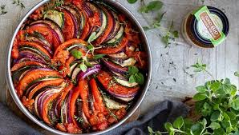

Ratatouille

Desription
Ratatouille is a French Provençal dish of stewed vegetables, originating in Nice, and sometimes referred to as ratatouille niçoise Recipes and cooking times differ widely,
but common ingredients include tomato, garlic, onion, courgette (zucchini), aubergine (eggplant), capsicum (bell pepper),
and some combination of leafy green herbs common to the region.
Ingredients
- 2 red onions
- 4 cloves of garlic
- 3 courgettes
- 3 red or yellow peppers
- 6 ripe tomatoes
- Basil
- Olive oil
- Thyme
- 400 g tin of quality
- 1 tablespoon balsamic vinegar
- 1/2 a lemon
Steps
- Prep your ingredients before you start – peel and cut the onions into wedges, then peel and finely slice the garlic. Trim the aubergines and courgettes, deseed the peppers and chop
into 2.5cm chunks. Roughly chop the tomatoes. Pick the basil leaves and set aside, then finely slice the stalks.
- Heat 2 tablespoons of oil in a large casserole pan or saucepan over a medium heat, add the chopped aubergines, courgettes and peppers (you may need to do this in batches)
and fry for around 5 minutes, or until golden and softened, but not cooked through. Spoon the cooked veg into a large bowl.
- To the pan, add the onion, garlic, basil stalks and thyme leaves with another drizzle of oil, if needed. Fry for 10 to 15 minutes, or until softened and golden.
- Return the cooked veg to the pan and stir in the fresh and tinned tomatoes, the balsamic and a good pinch of sea salt and black pepper.
- Mix well, breaking up the tomatoes with the back of a spoon. Cover the pan and simmer over a low heat for 30 to 35 minutes, or until reduced, sticky and sweet.
- Tear in the basil leaves, finely grate in the lemon zest and adjust the seasoning, if needed. Serve with a hunk of bread or steamed rice.
Home